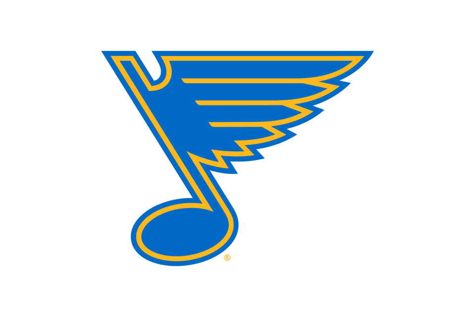
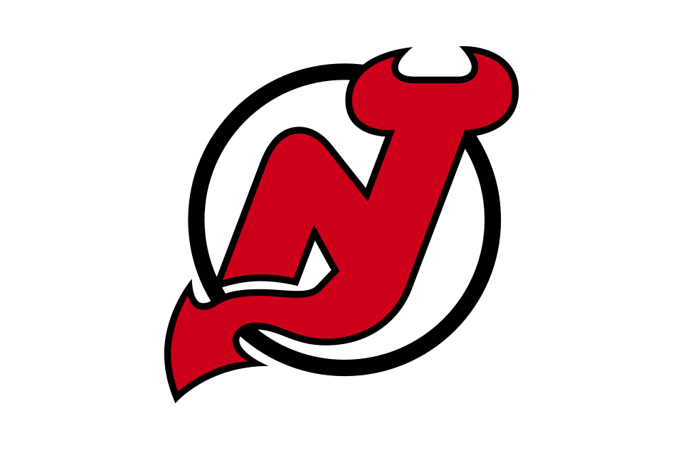

St. Louis Blues
Central · Western Conference · 40 headlines in the last 30 days
Blues highlights
3 videos
 Red Wings vs. Blues
Red Wings vs. Blues Blues vs. Predators
Blues vs. Predators

Blues vs. DevilsLatest Blues news
40 storiesInstant Analysis: Blues Snap Three-Game Skid With 3-2 Win Over Red Wings
Team wanted to play faster in offensive zone, did just that


St. Louis Blues Forward Dalibor Dvorsky Benched During 3-2 Win Over Detroit Red Wings
2023 first-round pick played just 6:36 in win, didn't play past 13:48 of second period; only played nine shifts

Snuggerud's goal, assist help power the Blues to a 3-2 victory over the Red Wings
LOUIS (AP) — Jimmy Snuggerud had a goal and an assist and his score in the third period was the winner as the St. Louis Blues beat the Detroit Red Wings 3-2 on Tuesday night.
(11-10-26) Red Wings-Blues Gameday Lineup
Mailloux to make season debut; Blues and red Wings to square of for second time in 11 days; Berggren to return to lineup after two straight healthy scratches; Faulk returns to St. Louis for first time since trade on March 6


Blues Activate Logan Mailloux Off Injured Reserve, Assign Adam Jiricek, Theo Lindstein To Springfield
Defenseman will make season debut Tuesday against Red Wings; team also recalls Calle Rosen as insurance
Blues Defenseman Logan Mailloux Skates On Top Pair At Practice As He Nears NHL Return
Logan Mailloux skated with Philip Broberg in the top pairing during today's practice. With his return imminent, the St. Louis Blues have made changes to their defensive group.

Instant Analysis: Consistency Issues Continue To Keep Inconsistent Blues Down After Falling Again, 3-1 To The Predators
A good start wiped out by another poor second period, flipping script from Thursday; why is consistency a problem with this core group; Suter line set the tempo; net front presence is trending up; Jiricek's first-period penalty a learning tool


Stamkos has goal, assist to lead Predators to 3-1 victory over Blues
(AP) — Steven Stamkos had a goal and an assist and Juuse Saros made 25 saves to lead the Nashville Predators to a 3-1 victory over the St.Ross Colton and Nick Perbix also scored and Roman Josi had two assists for Nashville.

Devils Surviving Blues Comeback Attempt Proves There’s More To This Team
“We're just a group that continues to learn. The recipe for us to win games is right there for us. I think there are no shortcuts,” Jesper Bratt

Devils escape catastrophe following disastrous third period with 5-4 overtime win over Blues
Jesper Bratt scored on a breakaway from Dougie Hamilton in overtime to lift the streaking New Jersey Devils to a 5-4 win over the St. Louis Blues on Thursday night.

Instant Analysis: Blues Rally To Steal Point, Eventually Fall In OT 5-4 To Devils
Another third-period comeback was in the works for St. Louis, which has been good in the final 20 minutes; key penalty kill in third; chance to grab game back in second period fell short; Blues were blitzed in opening 20, fortunate to only be down one; net front presence much better

Jesper Bratt scores in OT to give the streaking Devils a 5-4 win over Blues
(AP) — Jesper Bratt scored on a breakaway from Dougie Hamilton in overtime to lift the streaking New Jersey Devils to a 5-4 win over the St.It was Bratt's fourth career overtime goal.

Instant Analysis: Blues Search For Three-Game Winning Streak Bungled Again In 3-1 Loss To Rangers
Inept power play could have been difference maker; lose to Rangers side that had dropped four in row, nearly shut out for third time on season by goalie New York put on waivers at start of season


Dylan Garand bounces back in big way as Rangers handle Blues to end four-game skid
Dylan Garand makes 31 saves as the Rangers beat the Blues 3-1 to end a four-game skid.


(11-3-26) Blues-Rangers Gameday Lineup
Parayko to miss second game; Johnston returns after missing seven games; Blues once again search for third straight win
Blues Assign Logan Mailloux To Springfield On Conditioning Assignment
Defenseman has missed start of season with broken hand suffered in preseason fight against Chicago Blackhawks
St. Louis Blues, NHL, Fanatics Unveil Hometown Remix Uniform; Apparel, Headwear Collection Inspired By Fans, Fabric, Culture Of St. Louis
Blues to wear Hometown Remix uniforms ten times in 2026-27, beginning Nov. 17 vs Anaheim Ducks

St. Louis Blues Assign Quinton Burns To The AHL
The St. Louis Blues have reassigned 21-year-old defenseman Quinton Burns to the Springfield Thunderbirds of the AHL.

Instant Analysis: Blues Rally In Third Period To Pull Out 5-4 Win Over Red Wings
Three goals in 4:38 span completed comeback despite low shot volume (15 on goal); fighting on without top defenseman Parayko; Snuggerud goal at end of second key to comeback; Barron continues to impress

Red Wings Suffer Spooky Halloween Collapse, Lose 5-4 To Blues
The Detroit Red Wings suffered a third period collapse against the St. Louis Blues on Saturday afternoon, dropping a 5-4 final after leading 4-2.


Kaskimaki's first career NHL goal caps Blues' rally in 5-4 victory over Red Wings
DETROIT (AP) — Aleksanteri Kaskimaki scored his first career NHL goal to cap the St. Louis Blues' rally from a two-goal, third-period deficit in a 5-4 victory over the Detroit Red Wings on Saturday.


Blues Recall Theo Lindstein From Springfield
First-Round pick in 2023 NHL Draft played in two games for Thunderbirds last weekend after being assigned to AHL

St. Louis Blues Assign Otto Stenberg To The Springfield Thunderbirds
The St. Louis Blues have assigned forward Otto Stenberg to the Springfield Thunderbirds of the AHL. The 21-year-old recorded one assist in his three-game NHL call-up stint.
Instant Analysis: Blues Stick To Game Plan, Use Power Play Boost To Dispose of Bruins, 4-1
Stick play was exceptional through neutral zone; Thomas, Broberg connect on two man-advantage goals using just 10 seconds off set plays; Blues keep one of league's hottest teams cooled down


Thomas, Broberg lead Blues to 4-1 win over Bruins
LOUIS (AP) — Robert Thomas and Philip Broberg each had a goal and two assists to lead the St. Louis Blues to a 4-1 win over the Boston Bruins on Thursday night.

Report: St. Louis Blues Join List Of Teams Interested In Dylan Larkin; Still Not On His Trade List
Per NHL insider Darren Dreger, the St. Louis Blues are among the teams interested in acquiring Dylan Larkin who are not on his trade list.

Preview: Bruins continue their road trip in St. Louis
Home of the giant arch. But just one arch, two arches means McDonald’s.